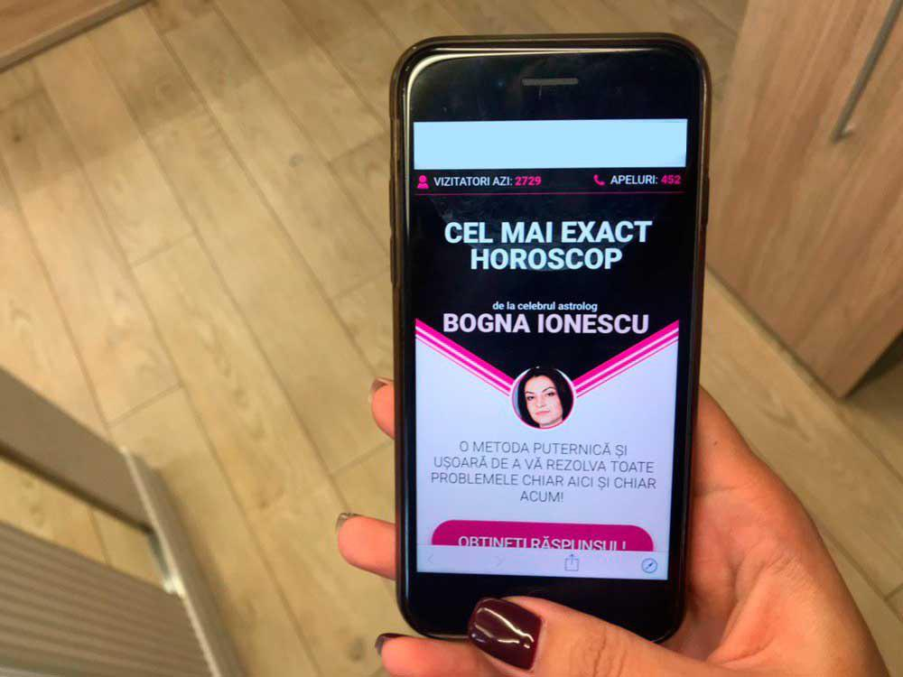

Astăzi vă voi povesti ceva ce am ținut până acum secret. Nu am povestit nimănui, pentru că nu am îndrăznit să cred că este adevărat. Numai că acum sunt sigură: viața mea plină de dezamăgiri crunte a fost schimbată de un adevărat miracol!
Am visat întotdeauna să am o familie mare, cel puțin doi copii și un soț iubitor, pe care să îl întâmpin când vine de la serviciu, cu masa gata pusă și cu multă iubire! Să am un loc de muncă în care să fiu apreciată și respectată. Să călătoresc ...
Dar soarta a hotărât să fie altfel. Până la vârsta aceasta, mă putem socoti cu ușurință . "o fată bătrână", complet singură. Cea mai lungă relație pe care am avut-o a durat numai 2 luni! Deja mă împăcasem cu gândul că o să rămân nemăritată. Mă vedem stând în continuare în apartamentul părinților mei, înconjurată de multe pisici, pentru tot restul vieții, la același loc de muncă plictisitor, cu un program de 9 la 18, unde lucram de vreo 5 ani, fără să fiu avansată și fără perspective de viitor ...
Într-o zi, cea mai bună prietenă mi-a trimis un link către site-ul unui astrolog. Nu am acordat nicio importanță la acel moment: de obicei, facem tot felul de teste online împreună, ne trimiteam glume sau jocuri. Ea mi-a scris ceva de genul: mișto, au spus numai lucruri adevărate despre mine! S-a dovedit că astrologul i-a spus ceva despre ea, ceva ce nimeni nu știa până în acel moment, în afară de ea însăși.

Am apăsat pe link, am răspuns la cele câteva întrebări ale testului, dar în locul afișării unui rezultat în genul celui primit de prietena mea, am primit un mesaj personal de la astrolog. Mi-a scris că vede în ce situație deplorabilă mă aflu și că vrea să mă ajute. La început am vrut să ies de pe site, gândindu-mă că nu sunt decât niște prostii! Dar m-am gândit mai apoi: cum poate cineva să simtă că sunt într-o stare deplorabilă, fără să mă vadă?
Asta m-a oprit. Apoi astrologul mi-a scris că a pregătit niște instrucțiuni detaliate pentru mine, un set de acțiuni, care mă va ajuta să-mi schimb soarta tristă. „Ei bine, să vedem dacă o să se întâmple așa ceva!” mi-am zis, dar totuși am decis să merg mai departe. Și atunci astrologul mi-a trimis numărul ei de telefon, unde mi-a lăsat un mesaj vocal personal cu acele instrucțiuni.
Așa că am sunat. Vocea ei era atât de convingătoare încât, după ce am ascultat mesajul, m-am decis să îi urmez sfaturile, mai ales că tot ce aveam de făcut era simplu, fără chestii de magie. Doamna astrolog mi-a mai spus că în curând voi vedea un anumit semn: o horă a stelelor. În momentul în care îl voi vedea înseamnă că voi beneficia de o șansă în urma căreia viața mea se va schimba radical.
Câteva zile mai târziu mi-a scris un vechi prieten de-al meu, pe care nu îl mai văzusem de foarte mult timp și m-a întrebat dacă aș fi interesată să merg la un interviu la compania unde lucrează: căutau foarte urgent un specialist cu profilul meu. La interviu, eram foarte nervoasă, fiindcă nu știam dacă o să fac față unui astfel de volum de muncă ... Și mă gândeam să refuz, dar atunci secretara mi-a adus o ceașcă de cafea ... care avea un imprimeu cu simbolul Uniunii Europene. „O horă a stelelor!” mi-am zis în sinea mea. Și, instant, mi-am amintit de doamna astrolog și de șansa de care îmi vorbise - și am fost de acord cu toate condițiile propuse. Iar ei m-au angajat! Mai mult, salariul era aproape de două ori mai mare decât cel dinainte.
Ca să înțelegeți mai bine, cana arăta cam așa
La o săptămână după ce m-am mutat la nouă companie, la sfârșitul uneia dintre zile, m-am ciocnit în fața liftului de unul dintre colegii mei, șeful departamentului IT. Alături de scuze, el s-a oferit să mă conducă până acasă .. .
În weekend m-a sunat și mi-a propus să ieșim la cină, unde am avut parte de o seară minunată. Pentru mine a fost ceva inedit, chiar dacă am aproape 35 de ani! La despărțire m-a sărutat pe obraz. M-am înroșit ca o adolescentă și nu am putut adormi toată noaptea. Și de atunci totul s-a schimbat cumva, într-un fel în care nici eu nu am înțeles!
Suntem împreună de șase luni! Nu am crezut niciodată că voi ajunge aici: am un loc de muncă excelent, cu un salariu foarte bun și un iubit cu care mi-am planificăm un viitor comun și căruia îi place să călătorească, așa cum îmi place și mie.
Și totul s-a datorat unui test de pe site și unui apel telefonic. Sunt sigură că totul a pornit de acolo, fiindcă acela a fost momentul de cotitură din viața mea. Plus acel SEMN!
Am început să împărtășesc contactele doamnei astrolog tuturor rudelor mele, pentru că îmi doresc ca și viața lor să fie mai bună. Și cum spun 7 din 10 persoane, lucrurile s-au schimbat în bine pentru ele ... Nu aș fi crezut niciodată astfel de povești dacă nu mi s-ar fi întâmplat chiar mie!
Mi-aș dori ca și viața ta să fie mai bună. Poate ai noroc și primești ajutorul din partea doamnei astrolog, așa cum mi s-a întâmplat și mie. Așa că îți las un link către site, chiar aici
Oare vei risca să apeși pe link și să afli dacă totul este în regulă cu tine sau soarta ta poate fi rescrisă în cel mai bun mod pentru tine, astfel încât să obții tot ceea ce îți lipsește în viața aceasta?